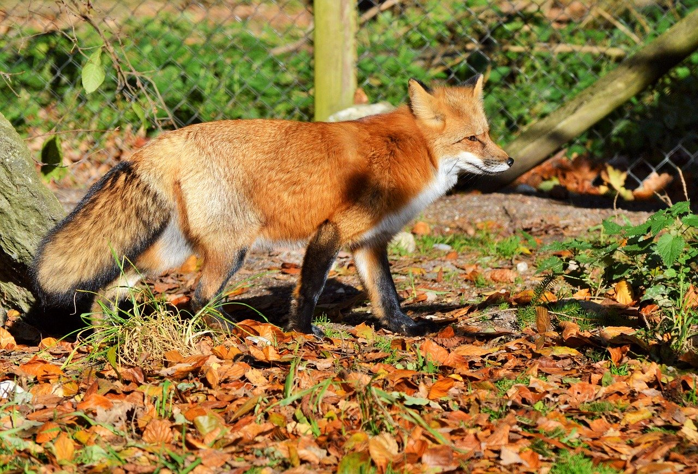

| Photo | Description | Link to Information |
|---|---|---|
|  | The red fox, cousin to the dog, is common across Minnesota. You might even spot one in the Twin Cities. | National Geographic |
 |
The black fox is a rare genetic variation of the red fox. | Safari LTD |
 |
The gray fox has salt and pepper gray fur with a long bushy tail marked with a black stripe. | Wildlife Science Center |
| This webpage was designed and constructed by Sanvi Sneh. | ||